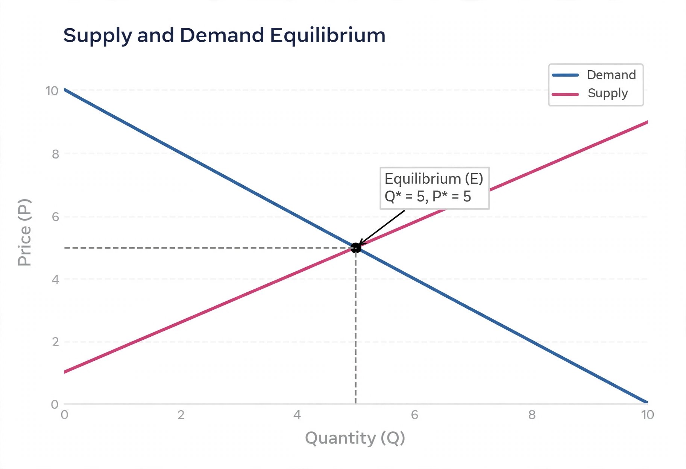

Partial equilibrium
From Wikipedia, the free encyclopedia
| Partial equilibrium | |
| Field | Microeconomics |
|---|---|
| Key figure | Alfred Marshall |
| Key texts | Principles of Economics (1890) |
| Contrast with | General equilibrium |

The classic supply-and-demand diagram at the heart of partial equilibrium analysis
In economics, partial equilibrium is a condition of economic equilibrium which takes into consideration only a part of the market, ceteris paribus — "all other things being equal" — to attain equilibrium. The approach studies a single market (for one good or a group of closely related goods) in isolation, treating prices and conditions in other markets as fixed.
Overview
The method was developed and popularised by Alfred Marshall in his Principles of Economics (1890). Equilibrium in the market for a single commodity is found where the demand curve — showing the quantities buyers will purchase at each price — intersects the supply curve, determining a market-clearing price and quantity. The familiar concepts of consumer surplus and producer surplus arise directly from this framework.
Applications
Partial equilibrium analysis is the standard first tool for studying the effects of taxes, subsidies, quotas, tariffs and price controls on a particular market. It underlies most applied cost–benefit and policy analysis in areas such as agriculture, housing, transport and environmental economics.
Limitations
Because it ignores feedbacks from other markets (income effects, cross-price effects, and factor-market repercussions), partial equilibrium results can mislead when the market studied is large relative to the economy or strongly linked to others. General equilibrium theory, descending from Léon Walras and formalised by Arrow and Debreu, addresses the economy as a whole but at far greater analytical cost.